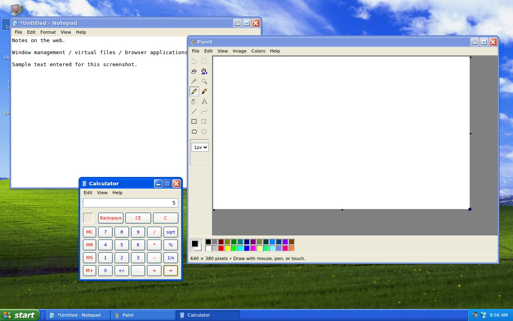

A small desktop.A lot of interaction.
An XP-inspired browser desktop built around windows, virtual files, application interfaces and personalisation. Genuine captures from the supplied R7 build.

Actual local application capture · click to inspect
A familiar desktop, reconstructed on the web.
Asteron XP explores how much of a classic desktop experience can be expressed through ordinary HTML, CSS and JavaScript.
The supplied R7 build includes an XP-inspired shell, desktop shortcuts, Start menu, taskbar, movable windows and built-in browser applications. It is a creative frontend project with a virtual file system, not a real operating system or Windows emulator.
My portfolio presents the supplied project as creative development work. Microsoft Windows names and the historical visual assets belong to their respective owners; this page does not imply an official Microsoft product or affiliation.
A tour of the supplied R7 build.


The interaction is the interesting part.
Desktop & windows
A shared window manager coordinates opening, focus, dragging, minimising, maximising and taskbar entries. Desktop gestures and shortcut handling connect the shell to applications.
Virtual files
The browser-local file system supports documents, folders and explorer interactions. Notepad supports browser saving with a session fallback when storage is unavailable.
Built-in applications
Source includes Notepad, Paint canvas tools, Calculator, Minesweeper and explorer-style components, plus familiar shell controls and a guided tour.
Personalisation
Wallpaper and appearance settings, user pictures and screen-saver preferences connect the visual shell to browser-local state.
Responsive window policies and touch/keyboard handling are present in the implementation. These source features are described separately from the limited interactions sampled for this portfolio's screenshot review.
A separate application, presented efficiently.
The project was opened from the supplied source on a local static server to capture the real interface. Startup/login, Start menu, My Computer and selected application launches were sampled. These checks do not certify every simulated desktop operation.
The previously supplied hosting address responded with a placeholder page rather than the XP desktop during review. A live-demo button is therefore omitted. The portfolio uses two optimised screenshots instead of bundling the full project.
The project is shown through actual screenshots and source-reviewed functionality. A static portfolio does not execute the separate project code.